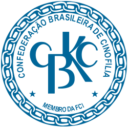
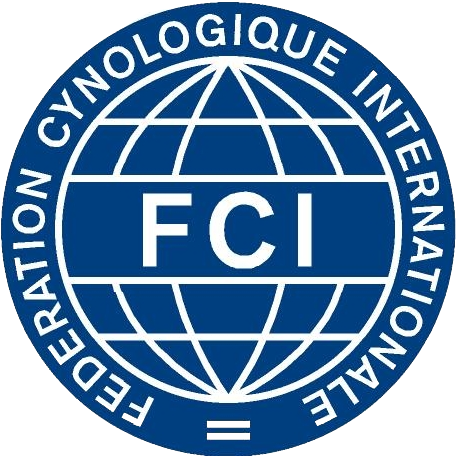
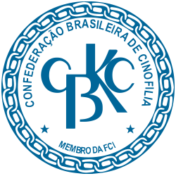
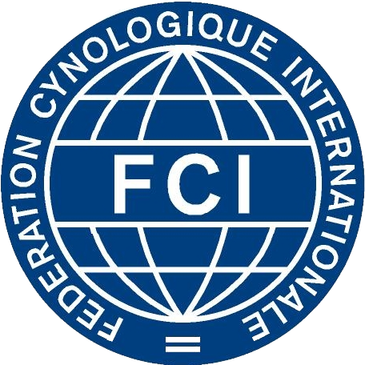

Bem-vindo a
Mondioring Brasil!
Aqui você poderá encontrar informações relativas ao esporte e as dinâmicas necessárias para a participação nos eventos de Mondioring.


Aqui você poderá encontrar informações relativas ao esporte e as dinâmicas necessárias para a participação nos eventos de Mondioring.
Esporte internacional praticado desde os anos 80, o Mondioring tem por finalidade destacar as aptidões dos cães, a qualidade do seu adestramento, o controle do seu condutor e, sobretudo, o patrimônio genético do cão.
O programa é constituído por três tipos de provas, que se desenrolam obrigatoriamente na seguinte ordem:
Exercícios de obediência
Exercícios de saltos
Exercícios de proteção
A superação e a coragem são sinônimas na relação existente da dupla Homem-Cachorro durante as provas. Os eventos são abertos ao público, possibilitando que a modalidade esportiva demonstre um verdadeiro espetáculo aos curiosos e admiradores da prática.
 



A Comissão Nacional de Mondioring é o órgão gestor oficial do esporte no Brasil. A CNM tem como responsabilidade o planejamento do calendário de provas, formação dos juízes da modalidade, formação e gestão de figurantes oficiais, divulgação do esporte e apoio aos clubes oficiais.
No final de 2018, a Confederação Brasileira de Cinofilia – CBKC, reestruturou a Comissão Nacional de Adestramento - CNA, criando comissões para os esportes caninos homologados pela Federação Cinófila Internacional – FCI, quais sejam, IGP, Agility, Obedience e o Mondioring.
Em fevereiro de 2019, após eleição feita com os participantes que tiveram cães titulados no esporte nos anos anteriores, foi criada a Comissão Nacional de Mondioring – CNM, tendo como coordenador eleito Luís Campanhã e como vice coordenador, Charles-Eric Valle. A partir deles, foram nomeados outros participantes, que já vinham atuando isoladamente na organização de provas, para somar esforços e compor a primeira formação da referida comissão, com a missão de estruturar o Mondioring no Brasil e formar as bases para as diretorias subsequentes.
Desde meados dos anos 2000, treinadores e criadores de cães de trabalho no Brasil despertaram seu interesse por um esporte canino, criado no fim da década de 80 na Europa. Neste, juízes de diferentes modalidades de esportes com cães de guarda desenvolveram um programa avaliativo que contemplasse diversos aspectos da interação entre homem e cão sob uma série de exigências e distrações. Tendo em vista que o circuito de prova acontece dentro de uma arena fechada, surgiu assim o Mondioring, que, em tradução direta, significa Ringue Mundial.
Em 2007, foi realizada a primeira prova de Mondioring em território nacional. Organizada por Marcos Bosler, em São Paulo, o evento contou com o julgamento do português Celso Alves, juiz internacional de Mondioring. Desde então, novas provas são organizadas anualmente, em várias etapas regionalizadas, sendo frequente a presença de participantes uruguaios e argentinos, também admiradores do esporte canino.
Em 2008, o Brasil teve sua primeira comitiva internacional, na qual, duas duplas participaram do campeonato mundial. Nos anos que se seguiram foram realizados vários seminários com juízes internacionais, provas com os cães e homologação de figurantes, assim, aos poucos, o esporte foi se consolidando em nosso país. A partir disso, vários participantes foram progredindo, tanto com seus cães nas categorias 1, 2 e 3, quanto como figurantes, aprimorando as técnicas, tanto para formação dos cães como para figuração nas provas e com, isso, o Mondioring Brasil foi ganhando cada vez mais adeptos.
Em 2016, o paulista Marcel Piancentini ficou em 16o lugar na colocação na final, entre 50 duplas da principal categoria (Cat.3) do Campeonato Mundial de Mondioring, naquele ano realizado na Bélgica.
No ano de 2017, os voluntários organizadores resolveram desenvolver um ranking, somando as pontuações dos participantes, por categorias, das provas realizadas durante aquele ano. Surgindo assim o 1o Campeonato Brasileiro de Mondioring, no qual, participaram da prova de encerramento mais de 30 binômios, nos três níveis, demonstrando o amadurecimento do Mondioring no Brasil.
Coordenador
Vice-Coordenador
Secretária
Tesoureiro
Comunicação/ Regulamentos
Mídias Sociais
Conselheiro
Árbitro
Árbitro